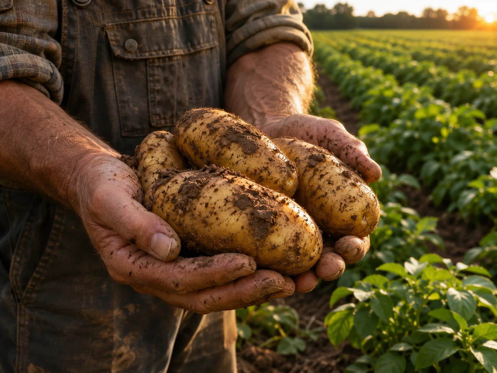
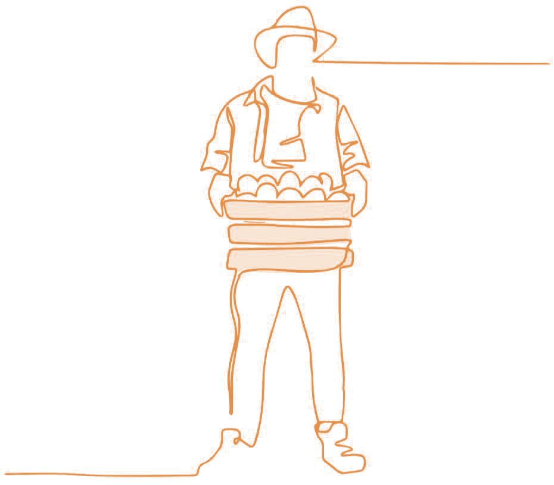
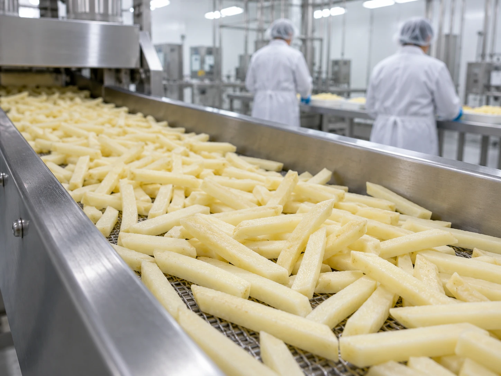
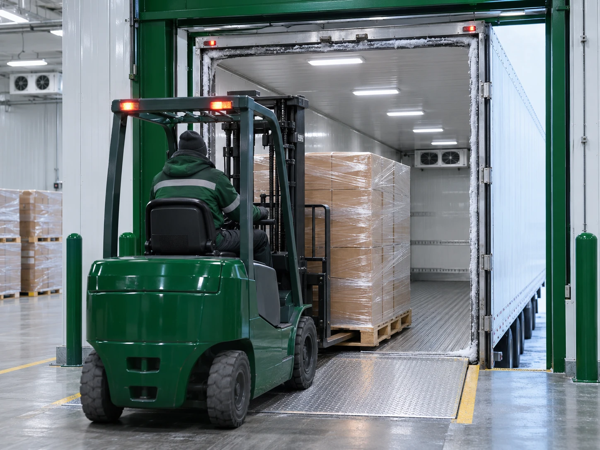

01Sourcing
Potatoes, vegetables, fruit and seafood chosen at the source in Egypt, India and Belgium.
Home / About Koot
Koot is a food brand: French fries, vegetables, fruits and pulps, seafood, sauces and pickles. We serve foodservice and B2B clients, and the brand is run by Koot Expert General Trading LLC in Dubai.


01Potatoes, vegetables, fruit and seafood chosen at the source in Egypt, India and Belgium.

02Cut, frozen and packed to the Koot specification, with fries graded A, AB and B.

03Frozen lines are kept at −18 °C and shipped to your warehouse.
Tell us which product lines you need, rough volumes and where they ship to. Our sales team will reply.
Koot Expert General Trading LLC
Dubai, United Arab Emirates
sales@koot.ae